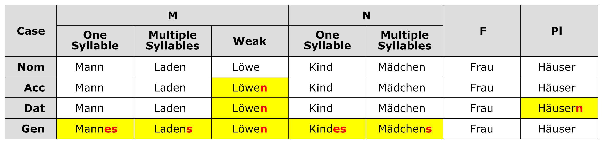

The table below shows how nouns inflect, or decline, according to case, gender, and number. There are three declension patterns for masculine nouns and two declension patterns for neuter nouns.

V. Articles and Adjective Endings
The tables below show how articles (definite and indefinite) and adjective endings inflect according to case, gender, and number.
VI. Verbs
Table 5 illustrates my categorization of German verbs according to their conjugation. The two main defining characteristics in this scheme are:
the past participle ending (–t or –en)
how the stem vowel (or diphthong) changes in the 3rd person singular past and past participle forms, if at all, in relation to the infinitive
Note that this categorization may differ slightly from others you have come across. I have created separate categories for the modal verbs as well as for four "special" verbs that do not quite satisfy the definitions of the other categories. The following sections provide details and example verbs.
Regular/Weak
Irregular
Mixed
Strong
Modal
Special
Past participle ends in –t Stem vowel does NOT change
Past participle ends in –t Stem vowel changes (to "a")
Past participle ends in –en Stem vowel changes
dürfen können mögen müssen sollen wollen
haben sein tun wissen
Regular, or weak, verbs have a past participle ending in –t and a stem vowel that does NOT change. There are many weak German verbs. Table 6 lists only a handful of examples.
Infinitive
Sing. Present
Sing. Past
Past Participle
Definition
1st Person
2nd Person
3rd Person
3rd Person
arbeiten
arbeite
arbeitest
arbeitet
arbeitete
gearbeitet
to work
lächeln
lächle
lächelst
lächelt
lächelte
gelächelt
to smile
machen
mache
machst
macht
machte
gemacht
to make
sortieren
sortiere
sortierst
sortiert
sortierte
sortiert
to gather
As with weak verbs, irregular mixed verbs have a past participle ending in –t. However, their stem vowel DOES change in the past and past participle forms. In my verb categorization, the stem vowel of a mixed verb always changes to "a". Table 7 lists the mixed verbs. The verbs "haben" and "wissen", which are typically included in the weak catergory, can be found in the irregular special category.
Infinitive
Sing. Present
Sing. Past
Past Participle
Definition
1st Person
2nd Person
3rd Person
3rd Person
brennen
brenne
brennst
brennt
brannte
gebrannt
to burn
bringen
bringe
bringst
bringt
brachte
gebracht
to bring
denken
denke
denkst
denkt
dachte
gedacht
to think
kennen
kenne
kennst
kennt
kannte
gekannt
to know
nennen
nenne
nennst
nennt
nannte
genannt
to name
rennen
renne
rennst
rennt
rannte
gerannt
to run
senden
sende
sendest
sendet
sandte
gesandt
to transmit
wenden
wende
wendest
wendet
wandte
gewandt
to turn
Irregular strong verbs have a past particple ending in –en and a stem vowel that changes. Strong verbs can be subcategorized according to one of three patterns of stem vowel (SV) change. Tables 8, 9, and 10 list the most common strong verbs of these three subcategories.
Infinitive
Sing. Present
Sing. Past
Past Participle
Definition
1st Person
2nd Person
3rd Person
3rd Person
backen
backe
bäckst
bäckt
backte
gebacken
to bake
blasen
blase
bläst
bläst
blies
geblasen
to blow
braten
brate
brätst
brät
briet
gebraten
to roast
empfangen
empfange
empfängst
empfängt
empfing
empfangen
to receive
essen
esse
isst
isst
aß
gegessen
to eat
fahren
fahre
fährst
fährt
fuhr
gefahren
to drive
fallen
falle
fällst
fällt
fiel
gefallen
to fall
fangen
fange
fängst
fängt
fing
gefangen
to catch
fressen
fresse
frisst
frisst
fraß
gefressen
to eat (animal)
geben
gebe
gibst
gibt
gab
gegeben
to give
geraten
gerate
gerätst
gerät
geriet
geraten
to panic
geschehen
–
–
geschieht
geschah
geschehen
to happen
graben
grabe
gräbst
gräbt
grub
gegraben
to dig
halten
halte
hältst
hält
hielt
gehalten
to hold
hauen
haue
haust
haut
hieb
gehauen
to chop
heißen
heiße
heißt
heißt
hieß
geheißen
to be called
kommen
komme
kommst
kommt
kam
gekommen
to come
laden
lade
lädst
lädt
lud
geladen
to load
lassen
lasse
lässt
lässt
ließ
gelassen
to let
laufen
laufe
läufst
läuft
lief
gelaufen
to run
lesen
lese
liest
liest
las
gelesen
to read
mahlen
mahle
mahlst
mahlt
mahlte
gemahlen
to grind
messen
messe
misst
misst
maß
gemessen
to measure
raten
rate
rätst
rät
riet
geraten
to guess
rufen
rufe
rufst
ruft
rief
gerufen
to call
salzen
salze
salzt
salzt
salzte
gesalzen
to salt
schaffen
schaffe
schaffst
schafft
schuf
geschaffen
to create
schlafen
schlafe
schläfst
schläft
schlief
geschlafen
to sleep
schlagen
schlage
schlägst
schlägt
schlug
geschlagen
to strike
sehen
sehe
siehst
sieht
sah
gesehen
to see
stoßen
stoße
stößt
stößt
stieß
gestoßen
to jab
tragen
trage
trägst
trägt
trug
getragen
to carry
treten
trete
trittst
tritt
trat
getreten
to step
vergessen
vergesse
vergisst
vergisst
vergaß
vergessen
to forget
wachsen
wachse
wächst
wächst
wuchs
gewachsen
to grow
waschen
wasche
wäschst
wäscht
wusch
gewaschen
to wash
Infinitive
Sing. Present
Sing. Past
Past Participle
Definition
1st Person
2nd Person
3rd Person
3rd Person
beißen
beiße
beißt
beißt
biss
gebissen
to bite
bewegen
bewege
bewegst
bewegt
bewog
bewogen
to move
biegen
biege
biegst
biegt
bog
gebogen
to bend
bieten
biete
bietest
bietet
bot
geboten
to offer
bleiben
bleibe
bleibst
bleibt
blieb
geblieben
to stay
erlöschen
erlösche
erlischst
erlischt
erlosch
erloschen
to expire
fechten
fechte
fichtst
ficht
focht
gefochten
to fence
flechten
flechte
flichtst
flicht
flocht
geflochten
to braid
fliegen
fliege
fliegst
fliegt
flog
geflogen
to fly
fliehen
fliehe
fliehst
flieht
floh
geflohen
to flee
fließen
fließe
fließt
fließt
floss
geflossen
to flow
frieren
friere
frierst
friert
fror
gefroren
to freeze
gedeihen
gedeihe
gedeihst
gedeiht
gedieh
gediehen
to thrive
genießen
genieße
genießt
genießt
genoss
genossen
to enjoy
gießen
gieße
gießt
gießt
goss
gegossen
to pour
gleichen
gleiche
gleichst
gleicht
glich
geglichen
to resemble
gleiten
gleite
gleitest
gleitet
glitt
geglitten
to slip
greifen
greife
greifst
greift
griff
gegriffen
to grasp
heben
hebe
hebst
hebt
hob
gehoben
to lift
kneifen
kneife
kneifst
kneift
kniff
gekniffen
to pinch
kriechen
krieche
kriechst
kriecht
kroch
gekrochen
to crawl
leiden
leide
leidest
leidet
litt
gelitten
to suffer
leihen
leihe
leihst
leiht
lieh
geliehen
to borrow
lügen
lüge
lügst
lügt
log
gelogen
to lie
meiden
meide
meidest
meidet
mied
gemieden
to shun
melken
melke
melkst
melkt
molk
gemolken
to milk
pfeifen
pfeife
pfeifst
pfeift
pfiff
gepfiffen
to whistle
preisen
preise
preist
preist
pries
gepriesen
to laud
reiben
reibe
reibst
reibt
rieb
gerieben
to rub
reißen
reiße
reißt
reißt
riss
gerissen
to rip
reiten
reite
reitest
reitet
ritt
geritten
to ride
riechen
rieche
riechst
riecht
roch
gerochen
to smell
saufen
saufe
säufst
säuft
soff
gesoffen
to guzzle
saugen
sauge
saugst
saugt
sog
gesogen
to suck
scheiden
scheide
scheidest
scheidet
schied
geschieden
to divide
scheinen
scheine
scheinst
scheint
schien
geschienen
to seem
scheißen
scheiße
scheißt
scheißt
schiss
geschissen
to shit
scheren
schere
scherst
schert
schor
geschoren
to clip
schieben
schiebe
schiebst
schiebt
schob
geschoben
to push
schießen
schieße
schießt
schießt
schoss
geschossen
to shoot
schleichen
schleiche
schleichst
schleicht
schlich
geschlichen
to skulk
schleifen
schleife
schleifst
schleift
schliff
geschliffen
to burnish
schließen
schließe
schließt
schließt
schloss
geschlossen
to close
schmeißen
schmeiße
schmeißt
schmeißt
schmiss
geschmissen
to fling
schmelzen
schmelze
schmilzt
schmilzt
schmolz
geschmolzen
to melt
schneiden
schneide
schneidest
schneidet
schnitt
geschnitten
to cut
schreiben
schreibe
schreibst
schreibt
schrieb
geschrieben
to write
schreien
schreie
schreist
schreit
schrie
geschrien
to shout
schweigen
schweige
schweigst
schweigt
schwieg
geschwiegen
to be silent
schwören
schwöre
schwörst
schwört
schwor
geschworen
to swear
speien
speie
speist
speit
spie
gespien
to spit
stehen
stehe
stehst
steht
stand
gestanden
to stand
steigen
steige
steigst
steigt
stieg
gestiegen
to climb
streichen
streiche
streichst
streicht
strich
gestrichen
to paint
streiten
streite
streitest
streitet
stritt
gestritten
to argue
treiben
treibe
treibst
treibt
trieb
getrieben
to float
trügen
trüge
trügst
trügt
trog
getrogen
to deceive
verlieren
verliere
verlierst
verliert
verlor
verloren
to lose
verzeihen
verzeihe
verzeihst
verzeiht
verzieh
verziehen
to forgive
weichen
weiche
weichst
weicht
wich
gewichen
to budge
weisen
weise
weist
weist
wies
gewiesen
to show
wiegen
wiege
wiegst
wiegt
wog
gewogen
to weigh
ziehen
ziehe
ziehst
zieht
zog
gezogen
to pull
Infinitive
Sing. Present
Sing. Past
Past Participle
Definition
1st Person
2nd Person
3rd Person
3rd Person
befehlen
befehle
befiehlst
befiehlt
befahl
befohlen
to command
beginnen
beginne
beginnst
beginnt
begann
begonnen
to begin
binden
binde
bindest
bindet
band
gebunden
to tie
bitten
bitte
bittest
bittet
bat
gebeten
to beseech
brechen
breche
brichst
bricht
brach
gebrochen
to break
dringen
dringe
dringst
dringt
drang
gedrungen
to insist
empfehlen
empfehle
empfiehlst
empfiehlt
empfahl
empfohlen
to recommend
erschrecken
erschrecke
erschrickst
erschrickt
erschrak
erschrocken
to startle
finden
finde
findest
findet
fand
gefunden
to find
gebären
gebäre
gebierst
gebiert
gebar
geboren
to give birth
gehen
gehe
gehst
geht
ging
gegangen
to go
gelingen
–
–
gelingt
gelang
gelungen
to succeed
gelten
gelte
giltst
gilt
galt
gegolten
to count
gewinnen
gewinne
gewinnst
gewinnt
gewann
gewonnen
to win
hängen
hänge
hängst
hängt
hing
gehangen
to hang
helfen
helfe
hilfst
hilft
half
geholfen
to help
klingen
klinge
klingst
klingt
klang
geklungen
to sound
liegen
liege
liegst
liegt
lag
gelegen
to be located
misslingen
–
–
misslingt
misslang
misslungen
to fail
nehmen
nehme
nimmst
nimmt
nahm
genommen
to take
ringen
ringe
ringst
ringt
rang
gerungen
to wrestle
schelten
schelte
schiltst
schilt
schalt
gescholten
to scold
schwimmen
schwimme
schwimmst
schwimmt
schwamm
geschwommen
to swim
schwingen
schwinge
schwingst
schwingt
schwang
geschwungen
to swing
singen
singe
singst
singt
sang
gesungen
to sing
sinken
sinke
sinkst
sinkt
sank
gesunken
to sink
sitzen
sitze
sitzt
sitzt
saß
gesessen
to sit
spinnen
spinne
spinnst
spinnt
spann
gesponnen
to spin
sprechen
spreche
sprichst
spricht
sprach
gesprochen
to speak
springen
springe
springst
springt
sprang
gesprungen
to jump
stechen
steche
stichst
sticht
stach
gestochen
to sting
stehlen
stehle
stiehlst
stiehlt
stahl
gestohlen
to steal
sterben
sterbe
stirbst
stirbt
starb
gestorben
to die
stinken
stinke
stinkst
stinkt
stank
gestunken
to stink
treffen
treffe
triffst
trifft
traf
getroffen
to meet
trinken
trinke
trinkst
trinkt
trank
getrunken
to drink
verderben
verderbe
verdirbst
verdirbt
verdarb
verdorben
to spoil
verschwinden
verschwinde
verschwindest
verschwindet
verschwand
verschwunden
to disappear
werben
werbe
wirbst
wirbt
warb
geworben
to advertise
werden
werde
wirst
wird
wurde
geworden
to become
werfen
werfe
wirfst
wirft
warf
geworfen
to throw
winden
winde
windest
windet
wand
gewunden
to twist
zwingen
zwinge
zwingst
zwingt
zwang
gezwungen
to force
Table 11 lists the six modal verbs, which are used to express concepts such as ability, necessity, obligation, permission, and want. They are frequently used in combination with other verbs. Their conjugations are highly irregular.
Infinitive
Sing. Present
Sing. Past
Past Participle
Definition
1st Person
2nd Person
3rd Person
3rd Person
dürfen
darf
darfst
darf
durfte
gedurft
to be allowed
können
kann
kannst
kann
konnte
gekonnt
to be able
mögen
mag
magst
mag
mochte
gemocht
to like
müssen
muss
musst
muss
musste
gemusst
to be obliged
sollen
soll
sollst
soll
sollte
gesollt
to be obligated
wollen
will
willst
will
wollte
gewollt
to want
Lastly, I have created a separate category for four "special" verbs whose conjugations do not quite satisfy the definitions of the other categories. Table 12 lists these special verbs. The following are comments on their irregular conjugations:
The verb "haben" resembles a mixed verb, but its stem vowel does not change.
The conjugations of the verbs "sein" and "tun" most closely follow the pattern of a strong verb.
The past participle of "tun", "getan", does not end in –en.
The verb "wissen" resembles a mixed verb, but it has irregular 1st, 2nd, and 3rd person singular present forms characteristic of modal verbs.
The verbs "haben" and "sein" are the two auxiliary verbs used form the perfect tenses of all German verbs.
Infinitive
Sing. Present
Sing. Past
Past Participle
Definition
1st Person
2nd Person
3rd Person
3rd Person
haben
habe
hast
hat
hatte
gehabt
to have
sein
bin
bist
ist
war
gewesen
to be
tun
tue
tust
tut
tat
getan
to do
wissen
weiß
weißt
weiß
wusste
gewusst
to know
Table 13 summarizes verb tenses and voices in the indicative mood. This example is based on the verb "machen".
Tense
Voice
Active
Passive
Present
Ich mache den Haushalt.
Der Haushalt wird von mir gemacht.
Present Perfect
Ich habe den Haushalt gemacht.
Der Haushalt ist von mir gemacht worden.
Past
Ich machte den Haushalt.
Der Haushalt wurde von mir gemacht.
Past Perfect
Ich hatte den Haushalt gemacht.
Der Haushalt war von mir gemacht worden.
Future
Ich werde den Haushalt machen.
Der Haushalt wird von mir gemacht werden.
Future Perfect
Ich werde den Haushalt gemacht haben.
Der Haushalt wird von mir gemacht worden sein.
Table 14 is a similar summary based on the verb "ankommen", which uses the auxiliary verb "sein". There are no passive forms in this example because "ankommen" is intransitive (i.e., does not take a direct object).